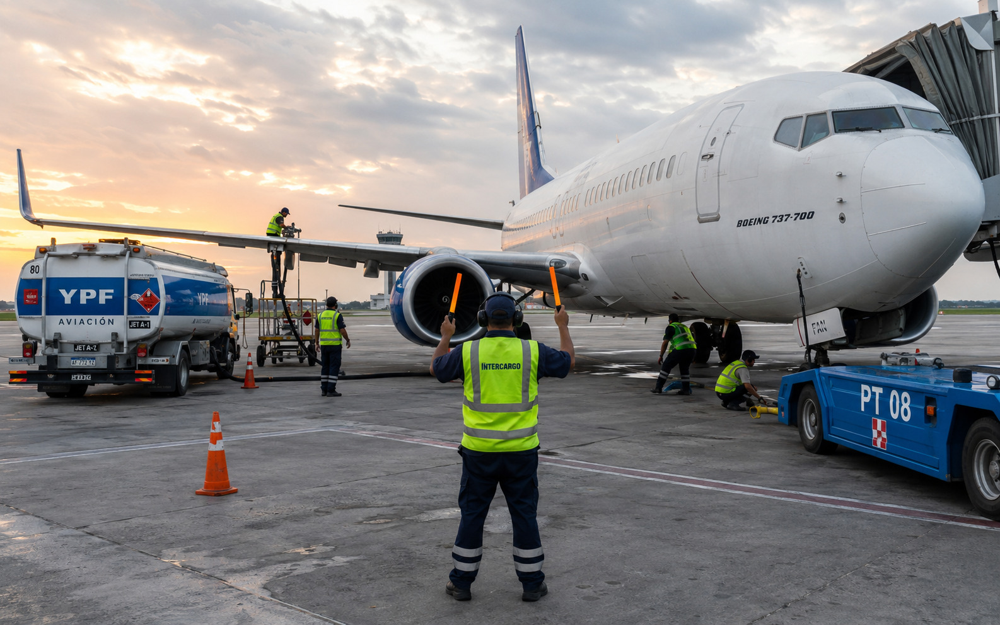

Como recorri Yunnan en 10 dias con 2,000 yuanes
Por Chen Li | | Categoria: Experiencias
Un recorrido completo por los imperdibles de Yunnan sin vaciar la billetera. Kunming, Dali, Lijiang y Shangri-La con transporte terrestre y aereo combinado.
Tu aerolinea low-cost en Yunnan
Historias de viajeros, guias de destinos y novedades de la aerolinea.
Por Chen Li | | Categoria: Experiencias
Un recorrido completo por los imperdibles de Yunnan sin vaciar la billetera. Kunming, Dali, Lijiang y Shangri-La con transporte terrestre y aereo combinado.
Por Maria Wang | | Categoria: Historias
Nuestra experiencia eligiendo una aerolinea low-cost para un momento especial. Spoiler: no te arrepentis.
Por Zhang Wei | | Categoria: Gastronomia
Desde los fideos Guoqiao (a traves del puente) hasta el hot pot de Yunnan. Ruta completa para foodies.
Por Equipo Lucky Air | | Categoria: Nosotros

Inspirados en Southwest Airlines, aprendimos a preparar un avion para su siguiente vuelo en solo 25 minutos. Te contamos como.
Por Zhou Min | | Categoria: Guias
Clima tropical, idioma, transporte, alojamiento barato y que comer. Todo lo que necesitas saber antes de ir.